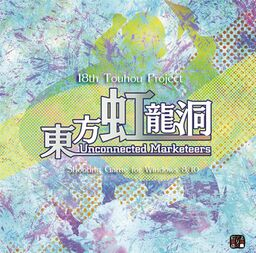
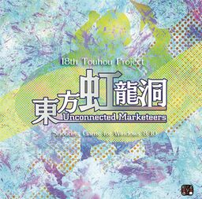

Touhou ProjectTouhou Project
Touhou ProjectTouhou Project
 

Touhou Project - серия компьютерных игр в жанре даммаку (скролл-шутер),
созданная японской компанией Team Shanghai Alice, состоящей из одного человека, известного под псевдонимом ZUN.
ZUN в одиночку производит графику, музыку и программный код своих игр.
Сюжет Touhou Project завязан вокруг странных феноменов, происходящих в
Генсокё, вымышленной локации, населённой людьми и ёкаями, сверхъестественными существами. До событий в играх Генсокё был изолирован от внешнего
мира магическим барьером. Протагонист серии, синтоистская жрица мико Рейму Хакурей, обеспечивает работоспособность барьера и сражается с враждебно
настроенными ёкаями.
Рейму Хакурей - главный игровой персонаж серии, участвующая почти в каждой игре этой серии. Являясь жрицей храма Хакурей, она отправляется на расследование странных происшествий в Генсокё. В ранних играх серии магические силы Рейму были сильно ограничены (В «Highly Responsive to Prayers» она не была способна наносить вред противнику). Но со временем она стала пользоваться своими способностями, вызывая сферы Инь-Ян и используя особые амулеты, и такими образами сражаться более эффективно. Это достигло высшей точки в период между «Mystic Square» и «Embodiment of Scarlet Devil», когда она научилась летать (до этого она полагалась на черепаху Гендзи в полетах, и самостоятельно летать не могла).